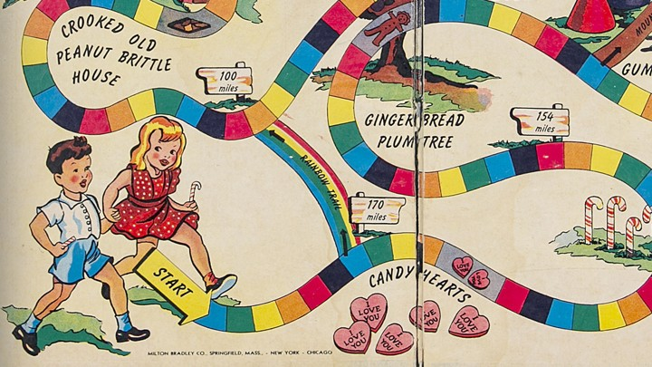
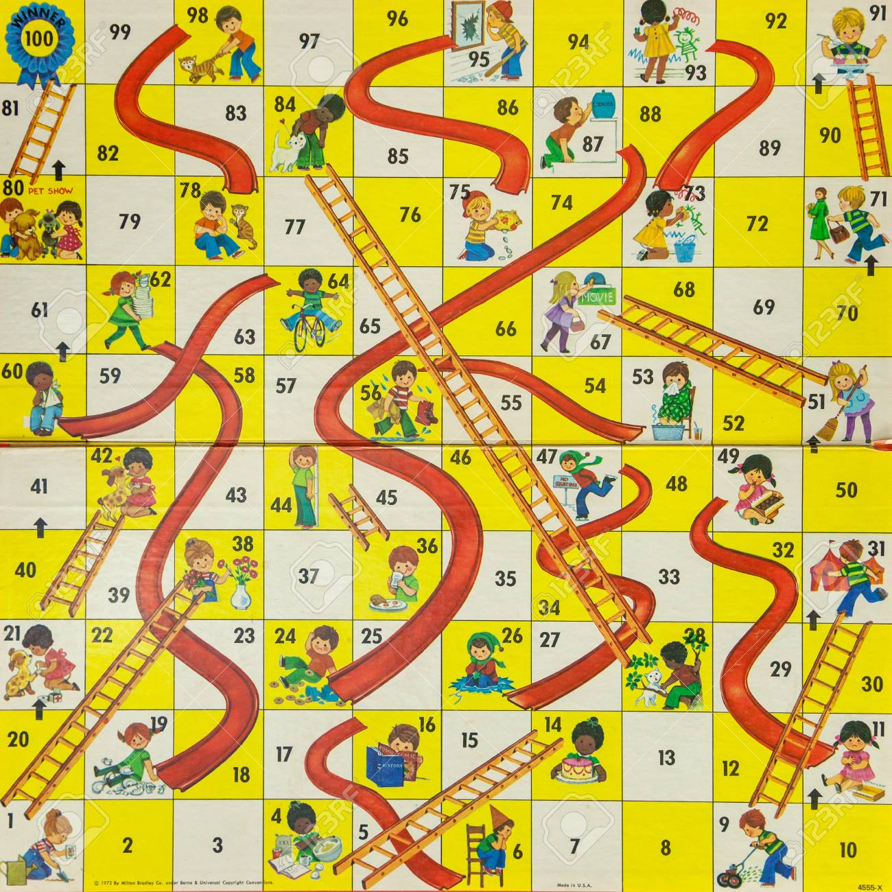

So... We needed to design a poster for the ITP Winter Show. The brief was to make something to show the more "human" side of ITP.
I spent a lot of time thinking about my own experiences at ITP, and the thing that stood out to me the most was the process of iteration and exploration that one goes through at ITP while building a project, and all the twists and turns it can take. I think that's something very special about the ITP community and the ITP environment, and when I considered how to translate that to a visual the first thing that came to my mind was, for some reason, board games.
Specifically, I thought about Candyland. Specifically specifically, I thought about how in Candyland there were some places you could land on that sent you forward, and others that sent you back. Of course, as soon as I was considering that I realized that the game I actually wanted was snakes and ladders.
Snakes and ladders is a game of pure chance. If you haven't played it, here's how you do it: you start at the bottom left and have to work your way to the top left. Each player takes turns rolling dice, and then they move the number of squares that they rolled. If you end your turn at the bottom of a ladder, you ascend the ladder, thereby skipping a bunch of squares. If you end your turn at the top of a snake, you go down the snake, losing ground. Milton-Bradley published a kids' version of this game called Chutes and Ladders, which is how my poster started.
I took a color palette from the Chutes and Ladders picture and started by making a grid of squares for my game board, 48 in all. I put the information for the show at the bottom right, using the font Myriad Pro. Then, I filled in the squares in the game board with the same color as the game board, and I the color for the main poster body I made the red color from the chutes in the board game.
I put numbers in each of the squares, and then all that was left was to find some snakes and ladders. I ended up using this set from Adobe Stock, which I modified a little to suit my purposes.
My final touch was to add some ITP-specific flavor to the game I'd made. In my head, the game would be a metaphor for building a project, so I included things like asking friends for help or staying up too late as the basis for the snakes and ladders.
In the end, I had a few different color schemes which I tried out -- you can see them all below, but I think I like the red one best.

And here are high-class PDF versions of all three. Black| Red| White
Comments? Questions? Concerns? Email me here!